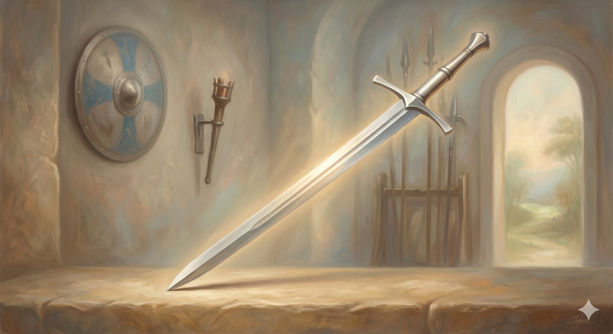

The Nicene Creed
The sword forged at Nicaea against Arius — its single decisive edge: that the Son is true God from true God.
"...the Word was with God, and the Word was God." John 1:1 (ESV)
If the Apostles' Creed is the shield, the Nicene Creed is the sword — the weapon forged for a particular fight, with one edge ground to a single decisive point. It is the most widely shared confession in all of Christendom, said across Catholic, Orthodox, and Protestant churches alike, and it exists because in the early fourth century the church faced a question on which the entire gospel turned: is Jesus truly God, or only the highest of God's creatures?
The Nicene Creed · 325 / 381 AD
We believe in one God, the Father Almighty, maker of heaven and earth, of all things visible and invisible.
We believe in one Lord, Jesus Christ, the only-begotten Son of God, born of the Father before all ages, God from God, Light from Light, true God from true God, begotten, not made, of one Being with the Father. Through him all things were made. For us and for our salvation he came down from heaven; he became incarnate by the Holy Spirit and the virgin Mary, and was made man. For our sake he was crucified under Pontius Pilate; he suffered death and was buried. On the third day he rose again in accordance with the Scriptures. He ascended into heaven and is seated at the right hand of the Father. He will come again with glory to judge the living and the dead, and his kingdom will have no end.
We believe in the Holy Spirit, the Lord, the giver of life, who proceeds from the Father and the Son, who with the Father and the Son is worshiped and glorified, who has spoken through the prophets.
We believe in one holy catholic and apostolic church. We acknowledge one baptism for the forgiveness of sins. We look for the resurrection of the dead, and the life of the world to come. Amen.
The battleArius and the one word he could not sign
A gifted and popular teacher named Arius pressed a claim that sounded humble and tidy: the Son, however exalted, had a beginning — "there was when he was not." Jesus was the first and greatest of all created beings, divine in some grand sense, but still a creature, made by the Father rather than eternal. The instinct beneath it was not contemptible; Arius was trying to guard the fierce oneness of God. But the cost was fatal, for a created Christ cannot reconcile us to God — only God can do that — and worship offered to a creature, however magnificent, is idolatry.
The council that gathered at Nicaea in 325 answered with a single Greek word the Arians could not bring themselves to sign: homoousios — "of one Being with the Father." Not like God, not God's finest product, but God from God, Light from Light, true God from true God, begotten not made. That one word is the sword's edge. It cannot be blunted into "very similar to God"; it means the same, undivided being. The expanded form said at 381 added the same full confession of the Spirit — "the Lord, the giver of life" — so that the creed guards the full deity of all three persons.
In plain terms
The whole fight was over one question: is Jesus God himself, or just the most impressive thing God made? Nicaea said God himself — and staked it on a single word that can't be fudged.
It matters because if Jesus is only a creature, then the rescue at the cross wasn't God coming to save us, and worshipping him would be a mistake. The sword keeps that line bright.
📖 The Scripture behind this Direct / Entailedwhat’s this?›
The claim: Jesus is truly and fully God — ‘of one Being with the Father,’ not the highest of creatures — so that the rescue at the cross is God himself saving us, and worship of Christ is not idolatry.
- John 1:1, 14 (ESV) — “In the beginning was the Word, and the Word was with God, and the Word was God. … And the Word became flesh.”The Word is both with God and is God — and became flesh as Jesus.
- Colossians 1:16–17 (ESV) — “For by him all things were created … And he is before all things.”The Son is Creator of all things — therefore not himself a creature.
- Titus 2:13 (ESV) — “our great God and Savior Jesus Christ.”Christ is called, directly, ‘our great God and Savior.’
The case for Entailed. The precise creedal formula — homoousios, ‘of one Being with the Father,’ one undivided divine essence — is the church’s synthesis, drawn by holding the deity texts together with the equally firm biblical insistence that God is one (Deuteronomy 6:4). Nicaea did not add to Scripture; it found the formula that holds ‘the Word was God’ together with ‘the LORD is one’ without dropping either. That synthesis is good and necessary consequence. So Christ’s deity is direct; the exact term homoousios is entailed.
Where they meet. Scripture directly calls the Son God and Creator; comparing those texts with God’s oneness yields Nicaea’s one decisive word. The council recognized what was already there and wrote it where it could be reached in the dark.
The deity of Christ is stated directly across the New Testament; the conciliar term homoousios is the church's faithful synthesis with monotheism — entailed, not invented. Held by Catholic, Orthodox, and Protestant alike.
A disputed line"Proceeds from the Father and the Son"
Honesty requires a note on one phrase. Where this creed says the Spirit "proceeds from the Father and the Son," the words and the Son — in Latin, the filioque — were added later by the Western church and are not in the original Eastern text, which reads simply "from the Father." The Eastern churches never accepted the addition, and it remains a real point of division between East and West to this day. This site stands in the Western Reformed tradition and confesses the fuller form, while recognizing the Eastern concern as a serious one — a desire to guard the Father as the single source within the Trinity. It is a family disagreement among those who together confess that the Son is fully God, which is the very thing this sword was forged to defend.
Not like God. Not God's finest product. God from God, true God from true God — the one word that cannot be blunted.
Granting that the Son is fully God, a harder question pressed in behind it: then how can he also be one of us — genuinely human? That is the battle the next weapon was made for.